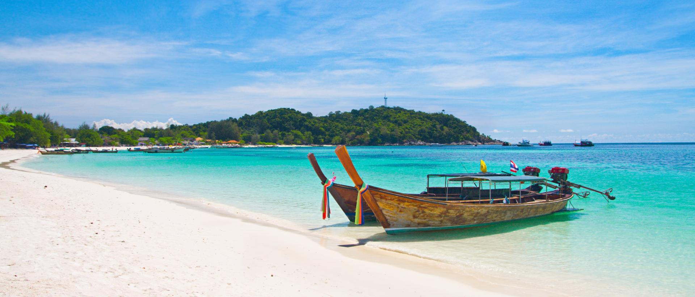
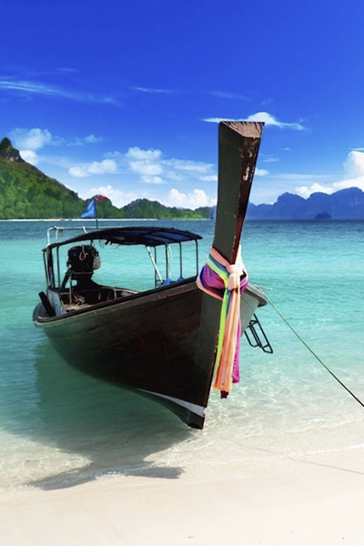
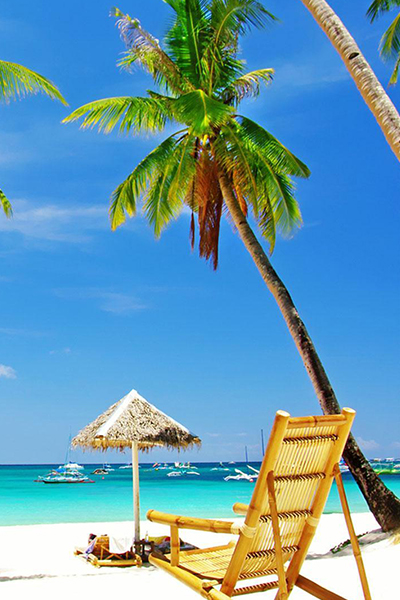

|  | |
Pattaya |
|
DemographicsThe city (mueang) had 320,262 people resident and counted on census 2010 (National Statistics Office). Most of these people counted are Thai, with most migrant populations not recognized, although the details are quite complex as there are even indigenous Thais without nationality, and migrant workers have since been largely regularized (albeit with due foreign pressure). Therefore, the census population even does not represent the total figure. As for Thai nationals and legal permanent residents (very few) registering the city as their hometown, the provincial authority logged population was 107,944 in 2010, modestly rising to 119,530 by 2019.[2] As with the Bangkok Metropolitan Region, registered population figure issued by a different agency than the National Statistics Office hardly captures the scope of the urban transformation that has occurred over the time span – the economy is dependent on the large numbers of casual Thai workers who work in the city yet remain registered in their hometowns, there is much employment turnover and to and from the capital, as well as seasonal farm migration. Migrant workers from neighboring nations, and many long-term expatriates who reside in the city as retirees or self-employed or contracted are traditionally not counted. There has never been a reliably published figure for total population, but its thought to be quite large (on the order of half a million people) given the ubiquity and sheer number of migrant workers taking place of Thai labor. Pattaya city excludes some nearby areas like Nong Prue (73,901 people in 2010 census) and Huay Yai. Pattaya additionally has massive population inflow from short stay tourism, with its 2000 hotels and 136,000 rooms available as of 2015. Due to the tourist industry, many people from the north-east (known as Isan, the poorest region of Thailand) have come to work in Pattaya, and are counted for census purposes in their hometowns. A majority of these northeast workers fulfill positions in the Go-Go bar industry, the pay they can earn is far more than that in their home region of Isaan. A growing community of foreign retirees live in Pattaya. Thailand immigration has a special visa category for foreigners over age 50 who wish to retire in Thailand. Pattaya is attractive to many retirees from other countries not only because of its climate and lifestyle, but also because living costs are lower than in many countries |
 |
|  |
Beaches and islandsThe main sweep of the bay area is divided into two principal beachfronts. Pattaya Beach lies parallel to the city centre, and runs from Pattaya Nuea south to Walking Street, about 2.7 km long. The beach, which used to be 35 m wide, suffers from erosion and in some places was reduced to a width of only two to three meters. A 429 million baht beach restoration scheme was implemented in 2018. It will take 360,000 m3 of sand from Ko Rang Kwian offshore to increase the beach width to 50 m. Pratumnak is on the south side of Pattaya and is popular for its viewpoints and the temple (Wat Phra Yai) on top of the hill. Pattaya Park and Pattaya tower are at the south end of Pratumnak and the Pattaya Exhibition And Convention Hall (P.E.A.C.H), is positioned at the north end of Pratumnak. In recent years, Pratumnak has gained in popularity because of its more natural environment, nicer beaches, and its convenient location between Jomtien and Pattaya city. Jomtien is divided from Pattaya by Thepprasit Road, the southern route into Pattaya city. It consists of high-rise condominiums, beach side hotels, bungalow complexes, shops, bars, and restaurants. Offshore islands include three "near islands": Ko Lan (main island), Ko Sak, and Ko Krok, 7 kilometres (4.3 mi) from the shore of Pattaya. The "far islands" are Ko Phai (main island), Ko Man Wichai, Ko Hu Chang and Ko Klung Badan, located offshore further west of the "near islands". Ko Rin lies offshore to the south-west, south of Ko Phai group. |
|
|
|